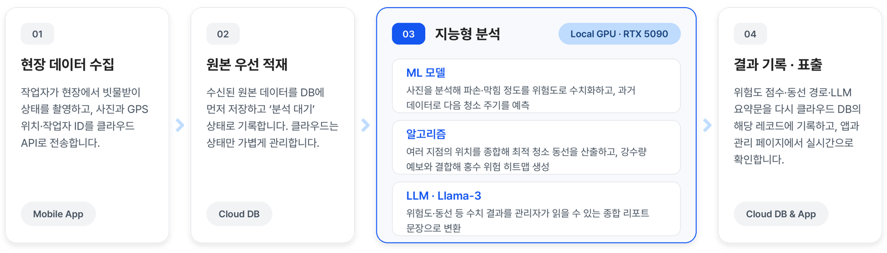
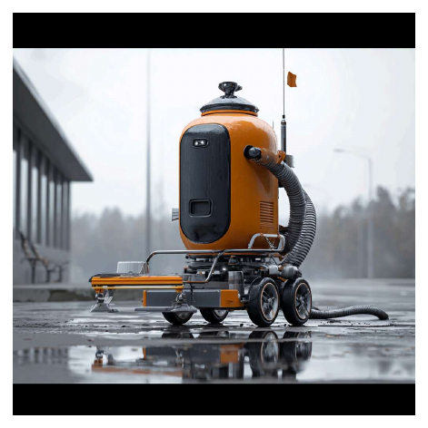

System
현장 로봇부터 클라우드 관제까지 한 흐름으로 설계했습니다
Jetson Orin이 ZED Mini 카메라 3대로 인식하고, STM32F407이 스테퍼 4축·윈치(24V 릴레이 2개)·실린더·서보 걸쇠를 구동합니다. 앱에서 올린 현장 사진과 GPS는 클라우드 DB에 "분석 대기" 상태로 먼저 적재되고, 로컬 GPU 서버가 위험도·청소 동선·강수 결합 침수 히트맵을 계산한 뒤 결과를 다시 DB에 기록해 관제 웹에서 봅니다.
왜 이렇게 나눴는가 — ML·알고리즘 연산은 비용이 크고 GPU가 필요하기 때문에, 상태만 가볍게 저장하는 클라우드 DB와 무거운 연산을 전담하는 로컬 서버를 분리해야 비용과 성능을 동시에 잡을 수 있다고 봤습니다. 그리고 "정확한 수치를 뽑는 것"과 "그 수치를 사람이 이해하게 설명하는 것"은 다른 문제라서, 수치 연산(ML+알고리즘)과 자연어 리포트 생성(LLM)을 처음부터 다른 단계로 분리했습니다.


